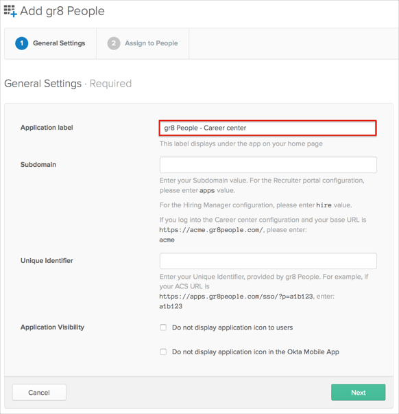

gr8 People is configured to use three configurations: Career center, Recruiter portal, and Hiring Manager. We recommend you use labels within Okta to distinguish between the configurations:

Contact the gr8 People Support team and request that they enable SAML 2.0 for your account.
Include the following data with your request:
Specify the type of configuration, either Career center, Recruiter portal, or Hiring Manager.
Issuer: Copy and paste the following:
Sign into the Okta Admin Dashboard to generate this variable.
IDP URL: Copy and paste the following:
Sign into the Okta Admin Dashboard to generate this variable.
Certificate: Save then attach the following:
Sign into the Okta Admin Dashboard to generate this variable.
The gr8 People support team will process your request and provide you with a Unique Identifier value.
In Okta, select the Sign On tab for the gr. People app, then click Edit.
Enter the Unique Identifier value provided by gr8 People into the corresponding field.
Click Save.
Done!
Notes:
IDP-initiated flows and SP-initiated flows are supported.
Just In Time (JIT) provisioning is not supported.
For Career center: Open your Career Center login URL.
For Recruiter portal: The SP-initiated flow is supported on the recruitment portal when a user receives an email to perform an action.
For Hiring Manager: The SP-initiated flow is supported on the Hiring Manager when a user receives an email to perform an action.